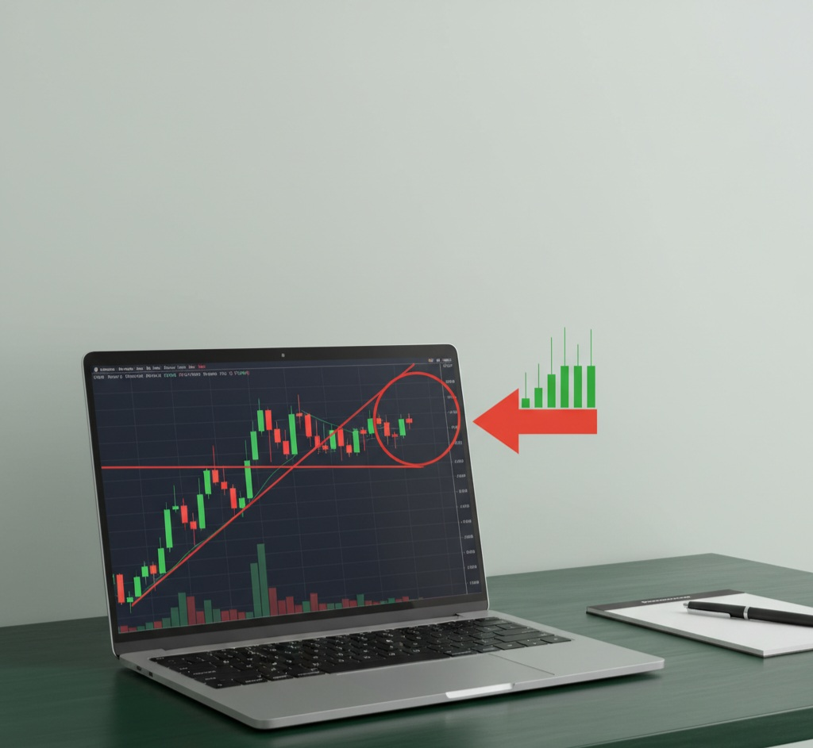

How to Trade EUR/USD with Just 3 Levels Per Week (The Weekly Close System)
What if I told you that you only need to mark 3 lines on your chart once per week to trade profitably?
No 20 indicators. No watching charts all day. No overtrading.
Just three horizontal lines marked every Sunday evening. Then patience.
This is the Weekly Close Reaction System - the exact approach I use to trade EUR/USD 1-3 times per week with an 75% win rate (October 2025 results).
As a farmer who transitioned to trading, I learned that you can't force growth - whether it's tomatoes or trades. You plant (mark your levels), wait (let structure form), and harvest (execute when ready).
Let me show you exactly how this system works.
1. Why the Weekly Close Matters (Institutional Behavior)
Every Friday at 23:00 GMT, the forex market closes for the week. That closing price on EUR/USD becomes something powerful: the institutional reference point for the new week.
Here's what happens:
- Banks and hedge funds mark that weekly close as "fair value"
- When the market reopens Sunday night, that level becomes a pivot
- Price will either defend that level (rejection) or break through it (momentum)
- The previous week's high and low become natural profit targets
This isn't theory. I've documented this pattern working week after week on my public Telegram channel.
2. The Three Lines You Mark Every Sunday (5-Minute Routine)
Every Sunday around 6-8 PM (before the market opens at 11 PM GMT), I do this simple prep:
Step 1: Open my MT5 chart to EUR/USD Weekly timeframe
Look at the last completed weekly candle (the one that closed Friday).
Step 2: Mark these three horizontal lines:
- 🔵 BLUE LINE:That Week Close (The most important level)
- This is where Friday closed at 23:00 GMT
- This becomes your key level for the entire week
- Price will react to this - guaranteed
- 🟢 GREEN LINE: That Week High (Your upside target)
- The highest point price reached That week
- If price rejects weekly close upward, this is your profit target
- 🔴 RED LINE: That Week Low (Your downside target)
- The lowest point price reached last week
- If price rejects weekly close downward, this is your profit target
That's it. Three lines. Done in 5 minutes.
No Fibonacci. No Bollinger Bands. No RSI. No MACD. Just structure.
3. The Three Scenarios That Play Out Every Week
After marking your levels, Monday-Wednesday is when setups appear. Here are the only three things that can happen:
Scenario A: Price Tests Weekly Close + Rejects (Best Setup - 60% of time)
What happens:
- Monday or Tuesday, price comes back to test your blue line
- A strong rejection candle forms on the 2H chart (big wick, closes away from blue line)
- This signals: "Weekly close is being defended"
Your action:
- Wait for 2H candle to close with clear rejection
- Enter on 30M chart in the direction of the rejection
- Stop loss: Beyond the rejection wick
- Target: Previous week's high (if rejected up) or low (if rejected down)
Example from October 13, 2025:
- Weekly close: 1.16199
- Monday morning: Price tested 1.16183 (right at blue line)
- 2H rejection candle formed, closed down
- Entered SELL at 1.16183
- Target: 1.15409 (previous week's low)
- Result: +507 pips, $5.07 profit ✅
Scenario B: Price Breaks Through Weekly Close (25% of time)
What happens:
- Price breaks above/below weekly close with momentum
- Closes beyond the blue line on 2H chart
- Later comes back to retest the broken level
- Shows rejection at the retest
Your action:
- Wait for the retest of broken weekly close
- Enter when retest is rejected (price can't get back inside)
- Target: Opposite side of previous week's range
Scenario C: No Clear Setup (15% of time)
What happens:
- Price is choppy around weekly close
- Multiple small touches, no clear rejection
- Indecision for 2+ days
Your action:
- Skip the week
- Close MT5
- Do not force a trade
- Wait for next Sunday to mark new levels
This discipline - knowing when NOT to trade - is what separates consistent traders from gamblers.
4. Real Results: October 2025 Performance
I document every trade publicly on Telegram. Here's what happened in October:
October 2025 Results
3 Wins | 1 Loss
75% Win Rate
All trades documented on Telegram
The breakdown:
- Trade 1 (Oct 6, 08:59): Impulsive entry, no system criteria = LOSS (-$1.64) ❌
- Trade 2 (Oct 6, 10:41): Weekly close rejection = WIN (+$2.92) ✅
- Trade 3 (Oct 13): Weekly close test = WIN (+$5.07) ✅
- Trade 4: System-based setup = WIN ✅
The pattern is clear:
- System-based trades: 3 wins, 0 losses (100%)
- Impulsive trades: 0 wins, 1 loss (0%)
The system works when I follow it. I lose when I don't.
5. Why This System Works for Busy People
Most trading strategies require you to:
- ❌ Watch charts 8 hours per day
- ❌ Trade 20+ times per week
- ❌ Use 10 different indicators
- ❌ React to every market move
The Weekly Close Reaction System is different:
- ✅ 5 minutes on Sunday (mark levels)
- ✅ Check chart Tuesday-Wednesday for setups
- ✅ 1-3 trades per week maximum
- ✅ Three levels only (close, high, low)
- ✅ Clear rules = no guessing
This works if you:
- Have a job or business (can't watch charts all day)
- Want simple structure (not 20 indicators)
- Value patience over activity (quality > quantity)
- Trade to build wealth slowly, not get rich quick
6. The Farming Mindset Applied to Trading
Growing tomatoes taught me everything I needed to know about trading.
In farming:
- You plant seeds at the right time
- You wait for growth (can't force it)
- You harvest when ready (not before)
- Some crops fail - that's part of the process
In trading:
- You mark levels every Sunday (planting)
- You wait for structure to confirm (growth)
- You execute when setup is clear (harvest)
- Some trades lose - that's part of the process
Same principle. Different soil.
7. How to Get Started with the Weekly Close System
Ready to simplify your trading and trade with clear structure?
Option 1: Start Free
Join my free Telegram channel where I post every trade result with charts and brief explanations. See the system in action week after week.
Join Free Telegram ChannelPlus, get my free guide "One More Season" - my journey from failed crops to profitable trades, and the resilience lessons that changed everything.
Get "One More Season" FreeOption 2: Get the Complete System
Want to execute these setups yourself with real-time support?
Join the Private Trading Group and get:
- 📚 Complete 90-page Weekly Close Reaction System trading plan (PDF)
- 📊 Sunday evening prep with exact levels and entry zones (before public)
- 🚨 Real-time setup alerts Tuesday-Wednesday when criteria met
- 📈 Live position management updates (entry, breakeven, exits)
- 💬 Daily market commentary and structure analysis
- 🎓 Weekly Q&A sessions with direct access to me
- 🛠️ Backtest tracker, position sizing calculator, trade journal templates
- 👥 Community of disciplined traders following the same system
Investment: $47/month or $400/year (save $164)
7-Day Free Trial: Try it risk-free. Cancel anytime.
30-Day Money-Back Guarantee: Not satisfied? Full refund, no questions asked.
Start 7-Day Free Trial →Why Reading This Blog Isn't Enough to Trade the System Profitably
If you've read this far, you now understand the concept of the Weekly Close Reaction System.
You know:
- ✅ Why the weekly close matters
- ✅ What three levels to mark
- ✅ The three scenarios that play out
- ✅ When to enter and exit generally
But here's the reality: Understanding the concept ≠ Being able to execute profitably.
⚠️ What This Blog Doesn't Include:
- The 12-point entry criteria checklist (How do you know it's REALLY a valid setup vs. a false signal?)
- Exact stop loss placement formula (Not just "beyond the wick" - where exactly? How many pips buffer?)
- Trade management rules (When to move to breakeven? When to trail? When to take partial profits?)
- Nuance and context (What if there are multiple touches? What if news is coming? What if it's a fake rejection?)
- Real-time guidance ("Is THIS candle a valid rejection?" "Should I enter NOW or wait?")
- Position sizing for YOUR account (How much to risk based on your capital and risk tolerance?)
- Psychological support (What to do when you're unsure, scared, or tempted to break rules?)
Think of this blog as a map showing you the destination.
The complete system is a GPS with turn-by-turn directions plus a guide in the passenger seat.
You know WHERE to go. But navigating there yourself - especially the first time - is challenging.
The Difference Between Free Content and Paid Support
📖 Free Content (This Blog + Telegram)
- The concept explained
- General approach shown
- Results posted AFTER trades close
- You figure out execution yourself
- No real-time guidance
- Learn by trial and error
🎯 Private Group
- Complete system details (90-page plan)
- Exact entry criteria (checklist)
- Sunday prep (levels + zones BEFORE week)
- Real-time alerts ("Entering NOW at X")
- Trade management live (during positions)
- Direct Q&A (when confused)
- Tools included (calculator, tracker)
What Private Members Get That You Don't
Let me show you what a typical week looks like for private members:
📅 Sunday 8 PM:
"Week 43 Prep: Previous week closed at 1.16199. High: 1.17300, Low: 1.15409. Entry zones: 1.1615-1.1625 for rejection setups. Watching for Monday gap reaction. Full analysis attached."
📊 Monday/Tuesday 9 AM:
"🔔 Setup forming - Price testing weekly close at 1.16180. 2H candle showing weakness. Criteria 80% met. Watching for close. Stand by for entry alert."
🚨 Monday/Tuesday 10:48 AM:
"✅ ENTRY TAKEN - SELL EUR/USD at 1.16183. Stop: 1.16014. TP1: 1.15800 (50%). TP2: 1.15638 (50%). Risk: 17 pips, Reward: 50+ pips. All criteria met. Position: 0.01 lot."
📈 Monday/Tuesday 2 PM:
"Trade update: Price at 1.1590 (+93 pips unrealized). Moved SL to breakeven (1.16183). Now risk-free. Letting it run to targets."
🎯 Monday/Tuesday 3 PM:
"✅ Trade closed. TP2 hit at 1.15676. Final result: +507 pips, $5.07 profit. Full breakdown posted. Questions?"
This is the difference:
- Public channel = "Here's what happened" (after the fact)
- Private group = "Here's what's happening NOW" (real-time execution)
You don't just learn the concept. You execute alongside me, in real-time, with full support.
Can You Learn This on Your Own?
Honestly? Maybe.
If you:
- ✅ Have 6-12 months to test and refine
- ✅ Are willing to lose money during the learning curve
- ✅ Can figure out the nuances through trial and error
- ✅ Have strong discipline to stick with it despite losses
- ✅ Don't need support when confused or scared
Then yes, you might figure it out on your own eventually.
But ask yourself:
- How much will you lose during those 6-12 months of trial and error?
- How many trades will you miss because you weren't sure if criteria were met?
- How many times will you break rules because you had no one to hold you accountable?
- What's the cost of figuring it out alone vs. having guidance from someone who's already done it?
$47/month for complete guidance, or $500+ in avoidable losses learning alone?
The math makes sense.
Ready to Trade With Full Support?
Get the complete system, real-time alerts, and daily guidance.
Start 7-Day Free Trial →7-day free trial • Cancel anytime • 30-day money-back guarantee
8. Final Thoughts: Simple ≠ Easy
The Weekly Close Reaction System is simple:
- Three lines
- Three scenarios
- Clear rules
But simple doesn't mean easy.
The hard part isn't learning the system. It's:
- Waiting when there's no setup (discipline)
- Not trading when you're bored (patience)
- Taking losses when they come (acceptance)
- Following rules when emotions say otherwise (consistency)
This is where the farm-to-charts mindset matters.
You don't harvest tomatoes before they're ripe, no matter how impatient you feel.
You don't close trades before structure confirms, no matter how anxious you get.
Same principle. Different soil.
If you're ready to trade with structure, patience, and discipline - join me.
Ready to Trade with Structure?
Two paths. Both valuable. Choose what fits you now.